AI01 首页入口与六个推荐问题
已验证实际操作：首页→AI助手。
页面反馈：欢迎页显示当前老师姓名和“小新”；输入框提供作业、考勤、作业质量、知识点正确率等提问示例。推荐问题有今日作业完成率分析、本周学情周报、未交作业学生提醒、学生薄弱知识点分析、我的作业完成情况、班级作业情况对比。
边界与未验证：示例和推荐文字代表界面提供的入口；没有据此认定六种查询都已跑通。
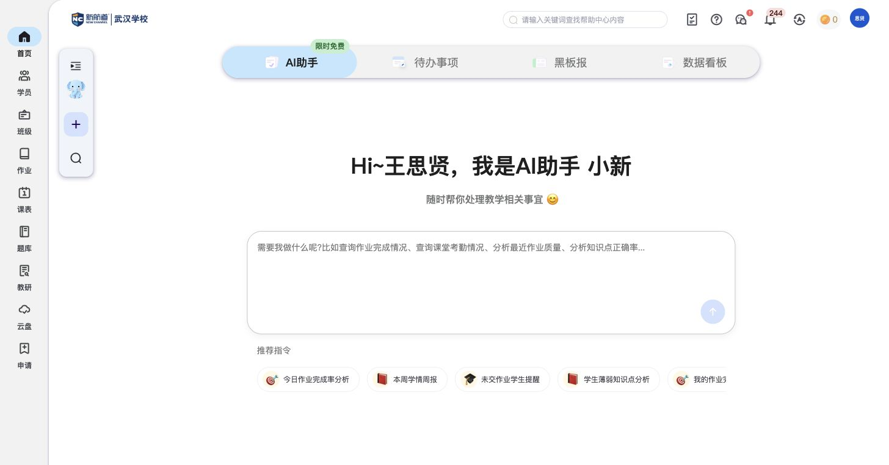
调研报告：首页功能结构与清单。本页保留逐次操作和截图，供追溯具体证据。
2026-10-22 · 逐功能截图版 · 44条操作记录
本版从“首页”一级页签重新实操，覆盖AI助手、待办事项、黑板报、数据看板及其直接下钻。其他一级页签仍待逐页重做，本版不宣称全产品已完成。
每条记录包含实际操作、页面反馈、执行状态和截图。功能结论严格来自本轮页面操作；旧帮助文档和旧版清单不作为本版功能证据，也不使用帮助文档配图。
环境：新航道武汉学校教师端，账号王思贤；2026-10-22。用户确认是测试环境、无敏感信息，并要求保留原始截图，不遮盖学员信息。
测试写入仅包括用户明确授权的测试班002黑板报通知与1条评论。未批改作业、未删除动态、未改变表头配置。
读法：“已验证”仅指本条明确写出的步骤与结果；“仅打开配置/菜单”不表示提交后的效果已验证；AI生成的统计、建议和公式单独标记为答复内容，不直接当作系统确定规则。
实际操作：首页→AI助手。
页面反馈：欢迎页显示当前老师姓名和“小新”；输入框提供作业、考勤、作业质量、知识点正确率等提问示例。推荐问题有今日作业完成率分析、本周学情周报、未交作业学生提醒、学生薄弱知识点分析、我的作业完成情况、班级作业情况对比。
边界与未验证：示例和推荐文字代表界面提供的入口；没有据此认定六种查询都已跑通。

实际操作：空白输入框→填写“请统计我最近7天布置作业的数量、完成率与待批改数量，并说明统计时间范围和计算口径。只提供汇总数据，不列出学生姓名。”→点击发送。
页面反馈：空输入时发送禁用；填写后启用。发送后提问显示在对话区，进入深度思考。
边界与未验证：输入框提示的其他任务未在本条执行。
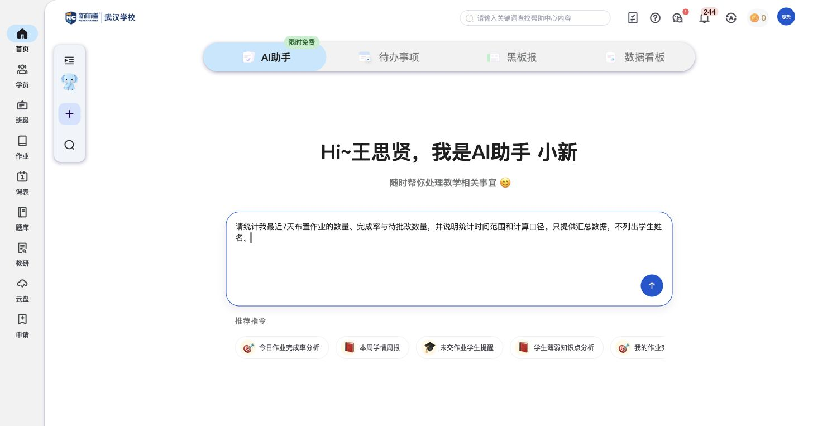
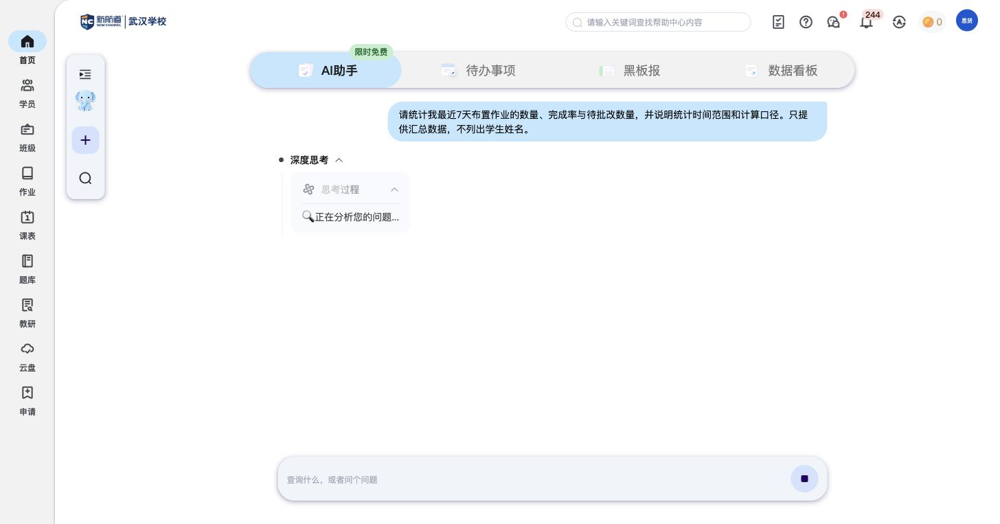
实际操作：发送查询后保持会话，观察进度；查询期间曾切到待办事项。
页面反馈：界面连续显示“查看老师作业统计”“进一步分析”“补充更多数据”“查看老师班级列表”等进度。约两分钟后返回完整答复；用户确认该耗时正常。查询完成时页面回到AI会话，打断了当时的待办筛选操作。
边界与未验证：这是本次会话观察，不推定所有查询都需相同时长或都会自动切页。
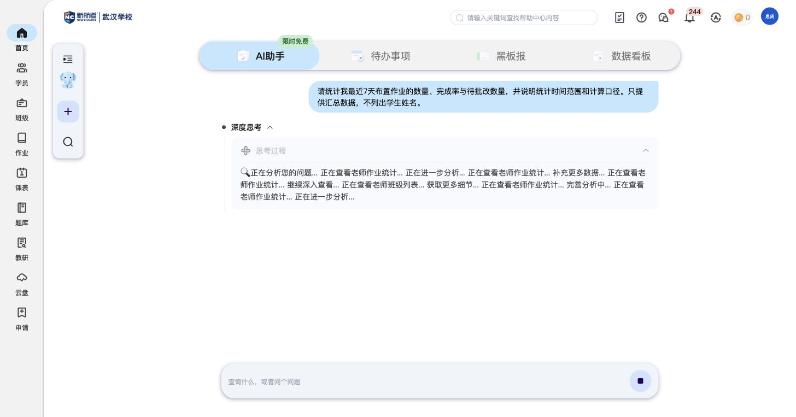
实际操作：等待最近7天查询完成→滚动阅读答复。
页面反馈：返回时间范围、核心结论、近期作业表、关注事项、行动建议和统计口径。答复称2026-10-15至10-22无新作业，并列“字数测试”“sat全科测试”共2份待批改。
边界与未验证：此处记录的是AI返回的内容。其“共7天”、作业范围、班级名和统计数没有被当成产品确定规则；待办默认19条与AI2份可能范围不同，不能直接等同。也没有实测执行AI建议中的提醒或布置动作。

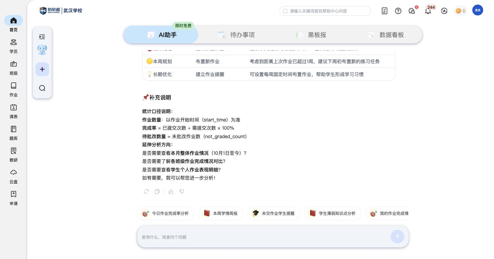
实际操作：展开左侧栏→查看分组→点击新对话。
页面反馈：侧栏显示“小新”、新对话、搜索和历史列表；已有会话分“今天”“7天内”。点击新对话回到欢迎页，旧会话仍保留。
边界与未验证：未测试其他时间分组、会话数量上限或跨设备同步。
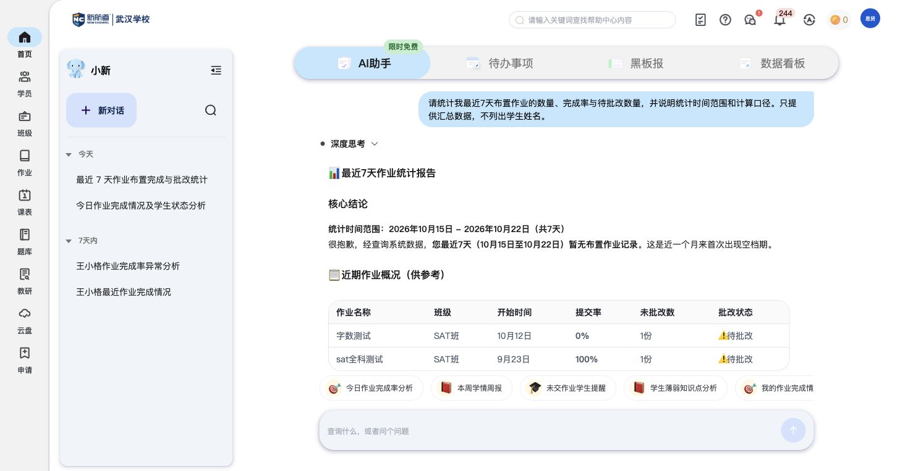
实际操作：点击侧栏搜索→输入“最近7天”→改为“作业”→点击“最近 7 天作业布置完成与批改统计”。
页面反馈：“最近7天”显示暂无搜索结果；“作业”命中4条会话并按今天、7天内分组。可打开所选会话。
边界与未验证：搜索匹配规则未证实；不能由一次未命中判定搜索故障。
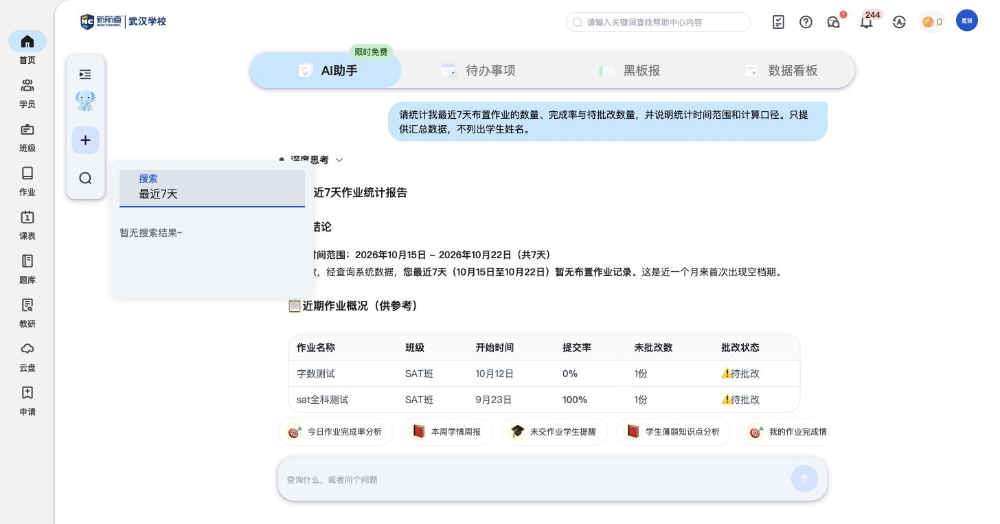
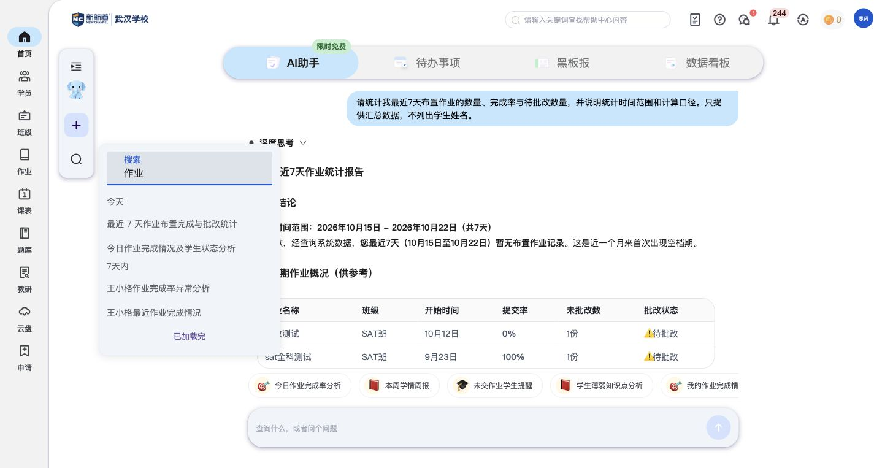
实际操作：新对话→点击“今日作业完成率分析”。
页面反馈：输入框自动填入详细指令，要求按今天的作业开始时间统计、展示班级与作业、区分已完成和未完成学生并分析；发送按钮启用，但未自动提交。
边界与未验证：只验证了该推荐项的填充行为，其他五项未逐一发送。
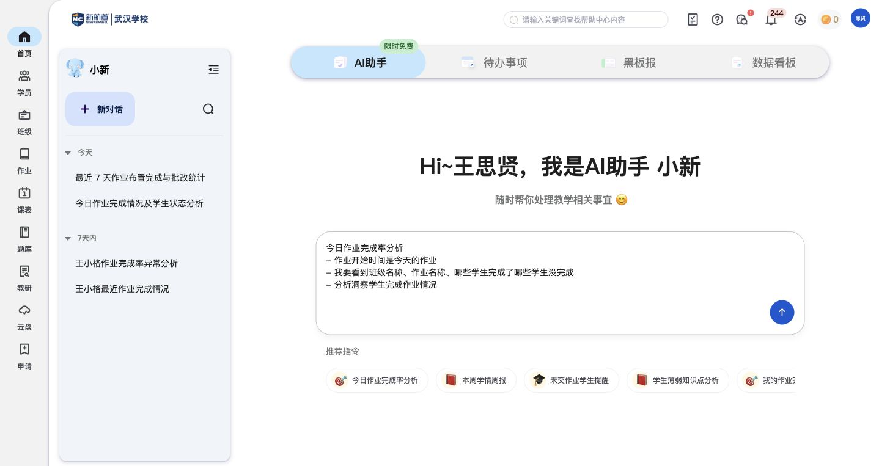
实际操作：发送推荐指令→生成中点击停止按钮。
页面反馈：进入深度思考后出现停止按钮；点击后提示“任务已取消”，输入框恢复，停止按钮消失。
边界与未验证：本次为主动中止，不评估该推荐问题最终回答质量。
实际操作：点击本次新会话的更多按钮。
页面反馈：菜单中实际显示“删除”。
边界与未验证：未执行删除；未验证恢复机制。侧栏其他无文字图标未推断为已验证功能。
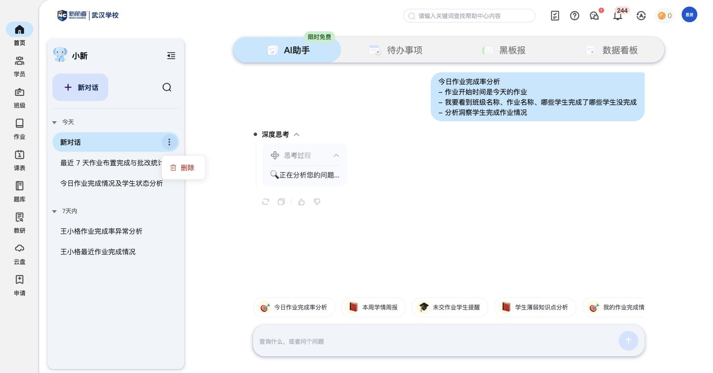
实际操作：首页→待办事项，查看默认列表。
页面反馈：默认显示待批改作业19条；卡片包含作业名称、时间、班级、学生姓名和头像。可继续滚动查看。
边界与未验证：此为当前老师账号、当前数据快照，不代表系统默认数量。
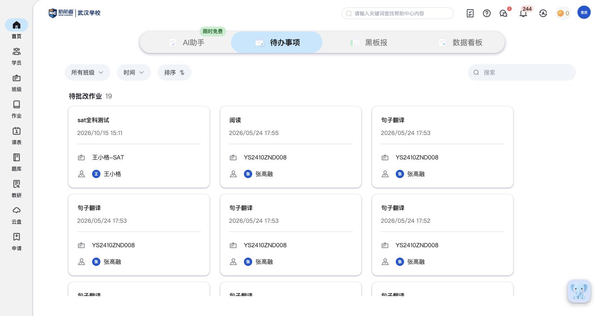
实际操作：所有班级→输入“测试班”→选择测试班002→收起选择器。
页面反馈：选择器有全部、在读、已结课状态，默认在读；关键词在上方检出测试班002，下方保留班级列表。勾选后标记已选1个，待批改从19条变为1条，只剩“基础语法”。
边界与未验证：已验证单班级筛选；多班合并和已结课数据未逐项验证。
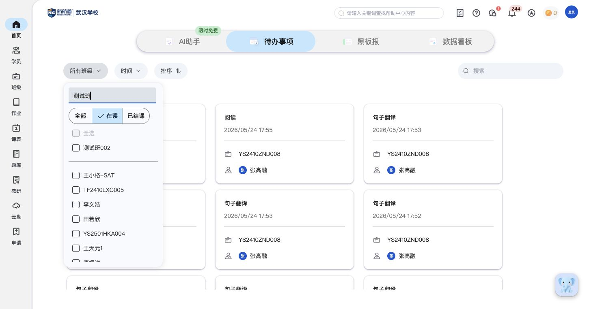
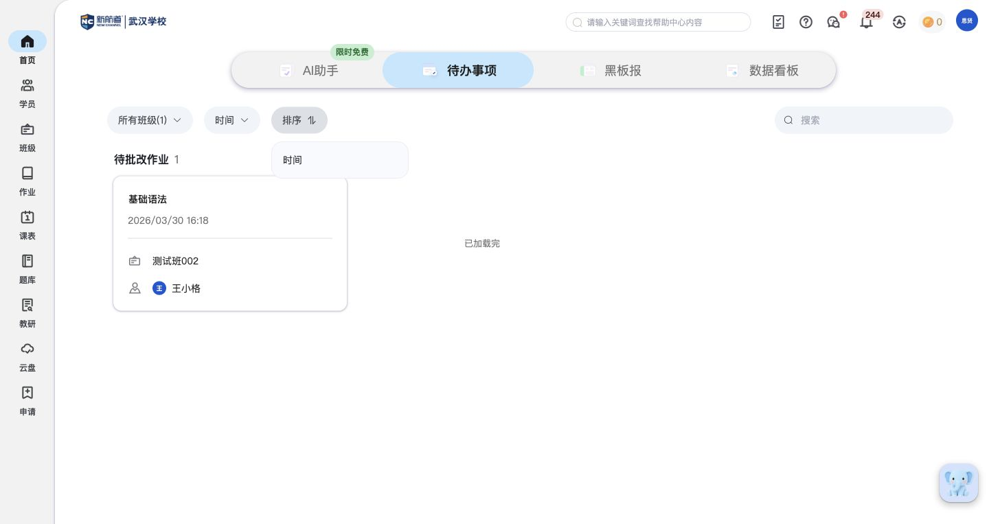
实际操作：点击时间按钮。
页面反馈：打开双月日历，可按日期选范围并有“清除”；筛选区域另有开始日期、结束日期输入。
边界与未验证：本轮打开并清除了日期，未以指定起止日期核对待办数量。
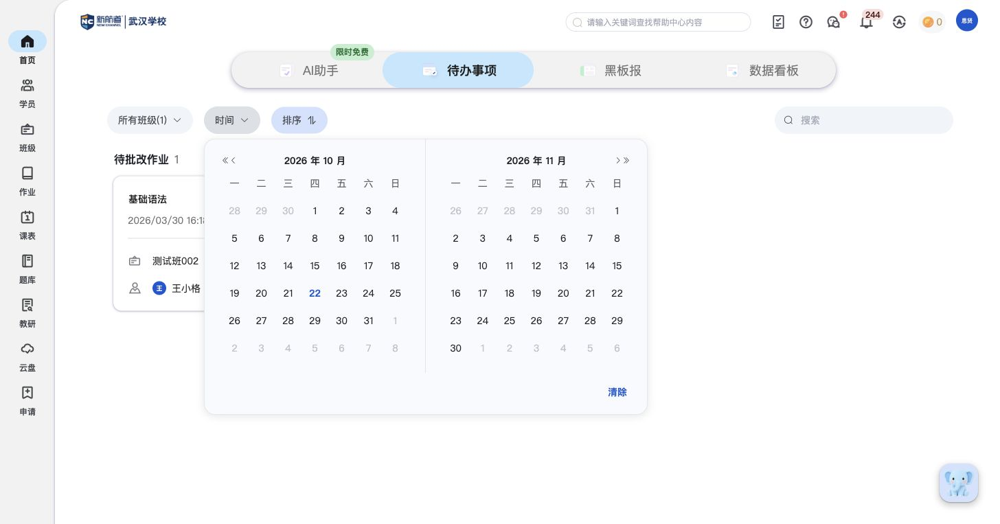
实际操作：点击排序按钮，查看选项，再点击时间。
页面反馈：排序弹层中仅见“时间”。
边界与未验证：没有用两条以上数据验证升降序切换方向，不能描述为已确认的倒序或正序。
实际操作：在已选测试班002下搜索“基础语法”并按Enter；再搜索“不存在的调研关键词”并按Enter。
页面反馈：基础语法命中1条；不存在关键词提交后卡片消失，显示空结果。搜索需要按Enter提交，不能仅凭输入后短暂旧列表判定失败。
边界与未验证：该空状态的DOM还出现课程、待反馈课程及0计数，但没有实际课程样例，不扩写课程业务规则。
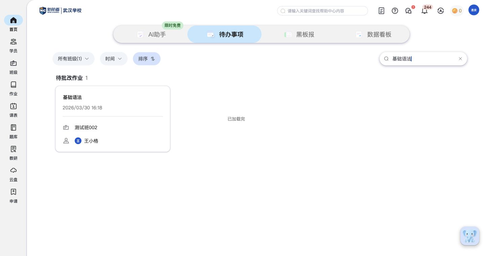
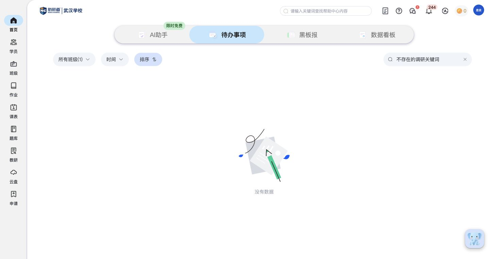
实际操作：恢复基础语法搜索结果→点击卡片标题。
页面反馈：新标签先进入作业完成统计，再跳到“基础练习”结果页。显示学生、作业时间、0分/100分、15题未答，以及作业结果、答题解析、答题录屏和生成报告入口。
边界与未验证：首页这一条只确认作业结果的入口和落点；评分、解析、录屏与生成报告将在作业页签实操，不据入口宣称闭环。
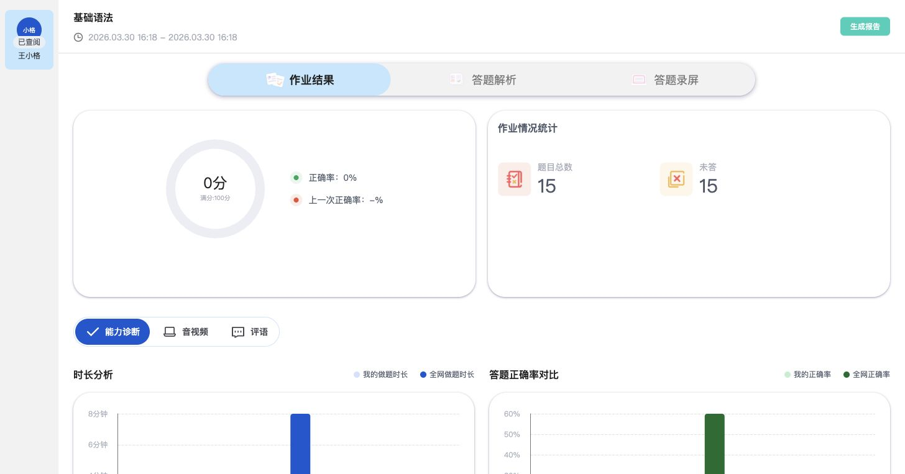
实际操作：首页→黑板报，查看默认不限列表。
页面反馈：动态卡显示发布者、老师身份、相对时间、标签、标题正文、班级和交互图标。作业动态内有相关作业名称与作业模考卡片，正文含截止时间。
边界与未验证：此处只记录列表展示；关联作业卡的点击流程尚未在本轮逐一实测。
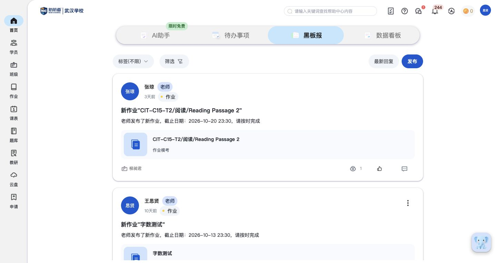
实际操作：展开标签→选择通知。
页面反馈：菜单有不限、作业、课程、考试、通知、活动、日常、假期。选通知后，当时显示“暂无数据，老师还没有发布消息”。后续在获准发布测试通知后列表出现新内容。
边界与未验证：其他标签仅查看选项，未逐类验证有数据结果。
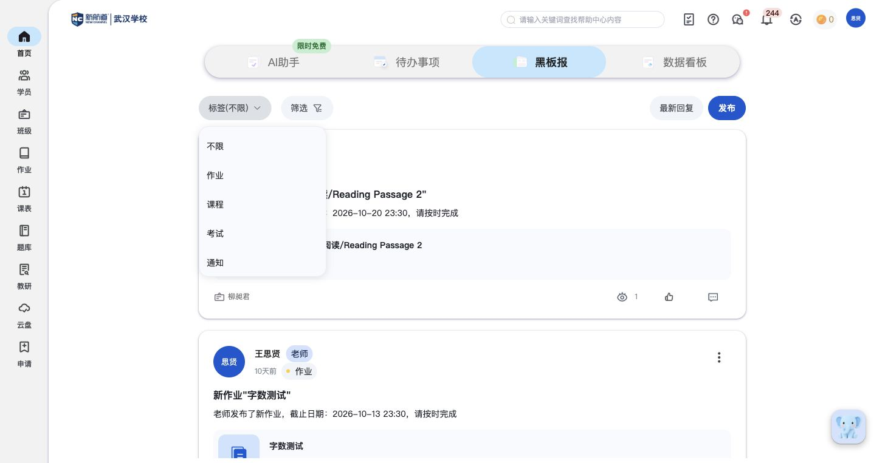
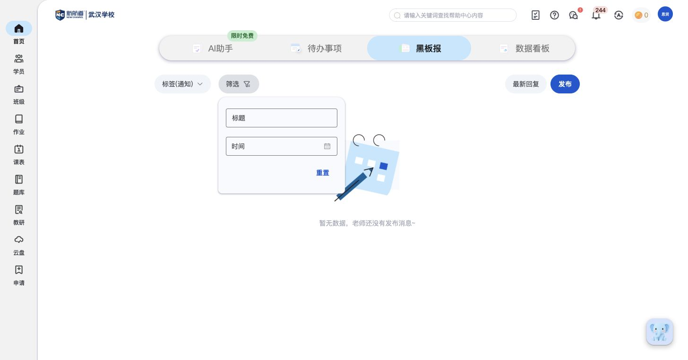
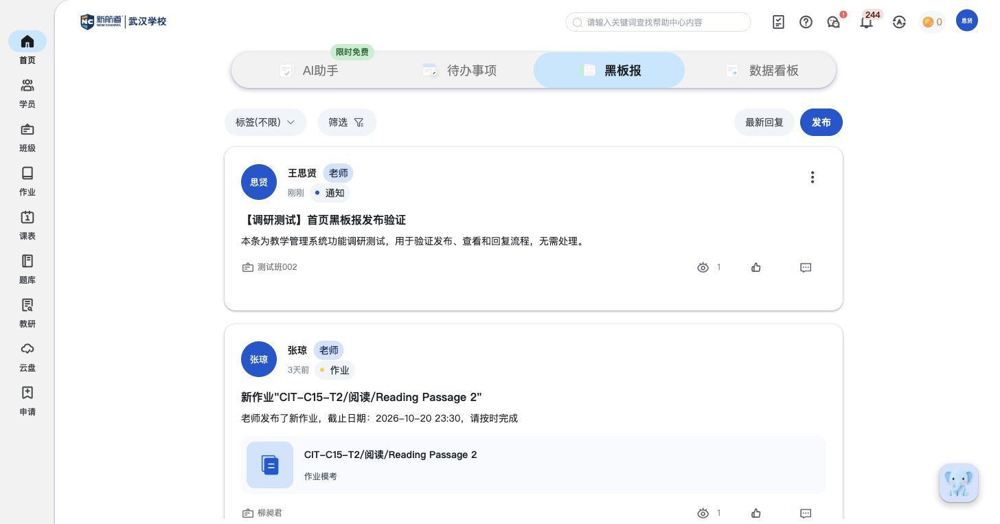
实际操作：点击筛选。
页面反馈：面板提供标题输入、时间输入/日期入口和重置按钮。
边界与未验证：未以多个样例验证标题包含匹配、时间边界和重置范围。
实际操作：点击最新回复。
页面反馈：右侧抽屉显示最新回复0、暂无数据，可关闭。它是回复入口，不是排序菜单。
边界与未验证：本次是测试评论之前的快照；未验证他人回复到来时的计数、提醒和跳转。
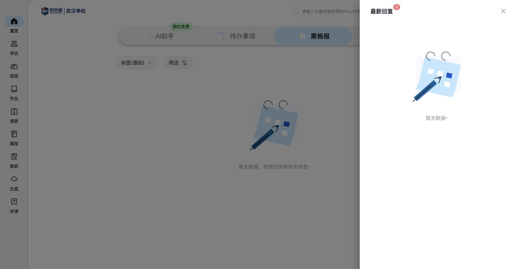
实际操作：点击发布→查看空表单→填写测试标题和正文。
页面反馈：弹窗默认通知；标题显示0/100字计数，另有正文、媒体图标和发布范围。空表单发布禁用；填写后启用。
边界与未验证：未测试100字截断边界、富文本和媒体上传；不根据图标猜测文件类型或容量限制。
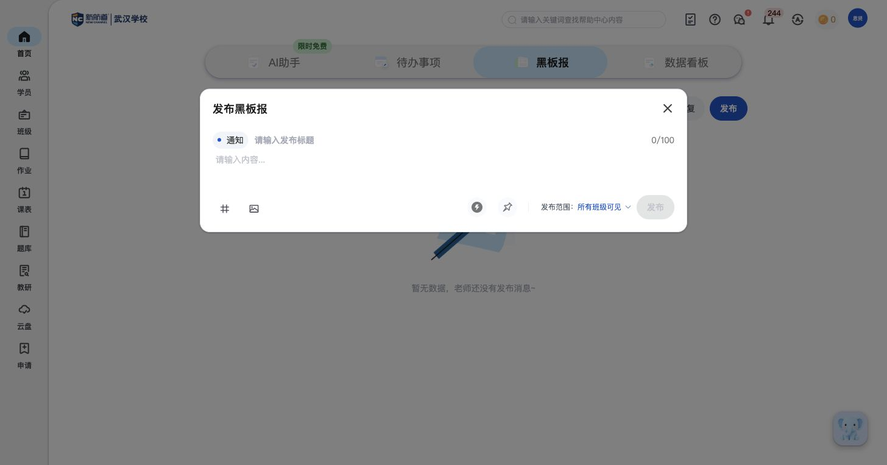
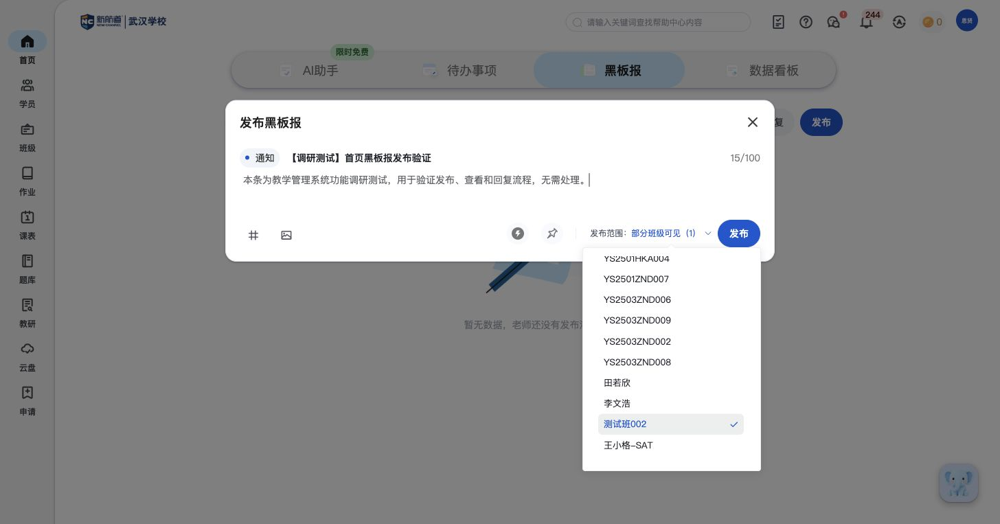
实际操作：展开默认“所有班级可见”→搜索/定位测试班002→选择→返回表单。
页面反馈：选择班级后范围显示“部分班级可见（1）”，测试班002有选中标记。发布后的卡片也标示测试班002。
边界与未验证：未验证多班发布以及不同学生账号的实际可见性。
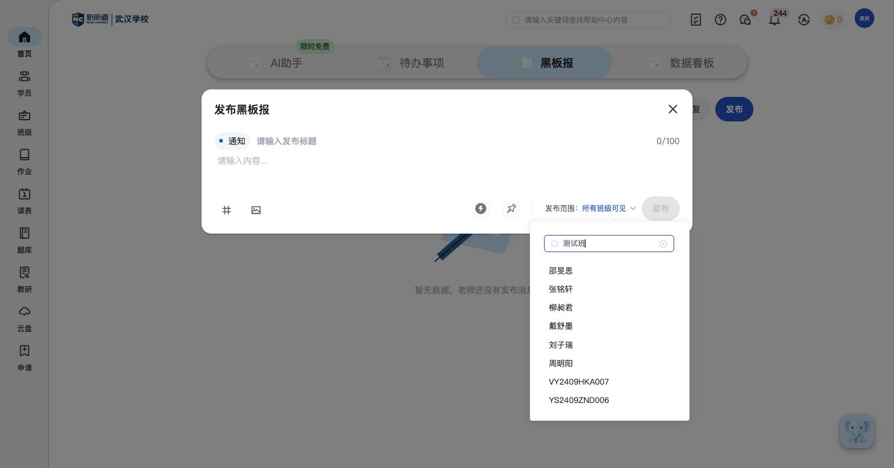
实际操作：获用户明确授权后，向测试班002发布“【调研测试】首页黑板报发布验证”；正文为功能调研测试说明。
页面反馈：页面提示“发布成功！”，新通知出现在列表首位，显示王思贤、老师、刚刚、通知及测试班002。
边界与未验证：新增的测试通知保留在环境中，动态ID为10670795；未删除。离开未提交的表单后再次打开发现为空，未见自动保存草稿。
实际操作：点击测试通知评论图标→输入“调研测试回复”→发布→点击展开全部1条评论。
页面反馈：空输入发布禁用；提交后评论计数变1。默认折叠，展开后显示回复人王思贤、老师身份、回复内容及时间，并出现收起入口。
边界与未验证：H27为提交中间现场，后续确认成功，不能作为故障结论。仅发布1条获准测试回复；没有测试他人回复、嵌套回复或删除评论。
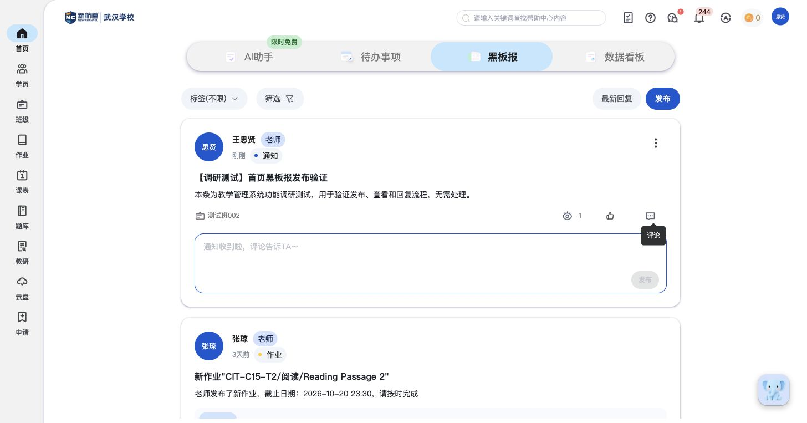
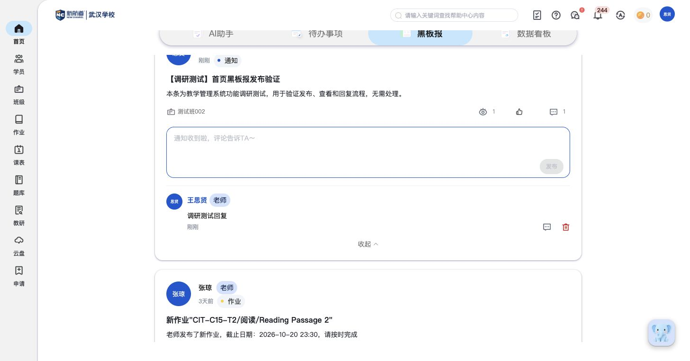
实际操作：点击自己测试通知右上更多。
页面反馈：实际菜单包含删除、置顶、重要。
边界与未验证：均未执行；不推定删除是否可恢复，也未验证置顶和重要的排序或通知效果。
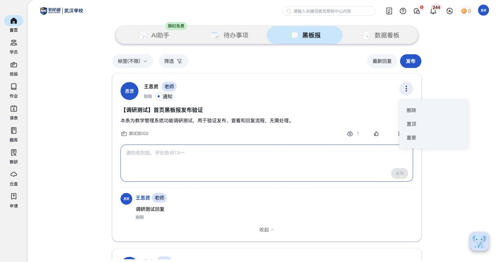
实际操作：首页→数据看板，等待折线图加载完成。
页面反馈：学生分析以作业完成率趋势折线展示；近7天显示10月16日至22日，图表提示可显示某日及完成率，22日为100%。
边界与未验证：只是当前快照，不推导口径，也不将空白加载态当作无数据。
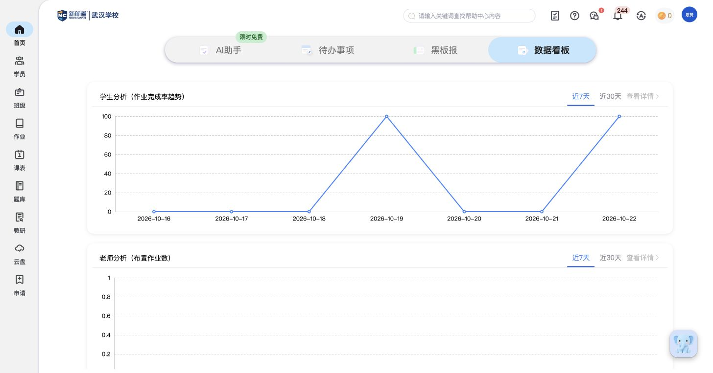

实际操作：分别将学生和老师图表从近7天改为近30天。
页面反馈：老师分析按日展示布置作业数；30天图中9月23日与10月12日有柱，近7天为0。学生折线日期范围也变为近30天。
边界与未验证：两个图表周期可分别切换。汇总图没有提供本轮可验证的计算说明。
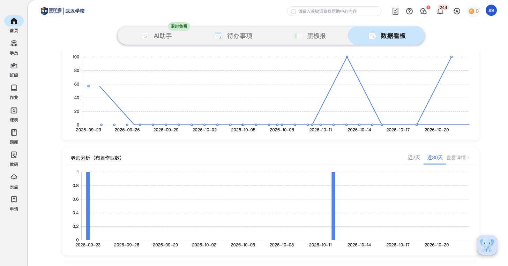
实际操作：向下滚动至提分分析（百分比）。
页面反馈：模块当前显示“暂无数据~”。
边界与未验证：未看到有数据图形，不能按旧帮助文档写成已确认的散点分布、分组或可下钻能力。
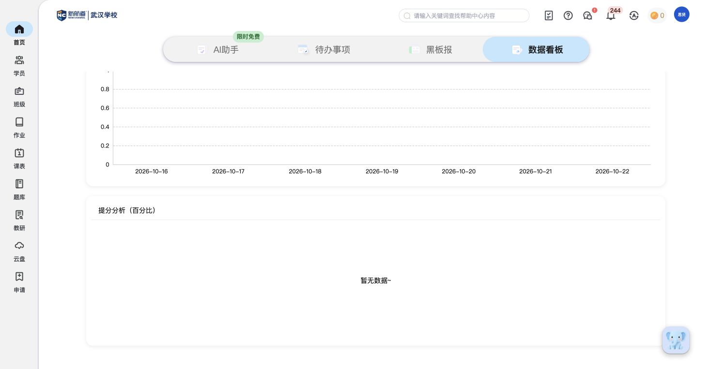
实际操作：点击学生分析的查看详情。
页面反馈：进入独立详情视图，提供日期范围、日/周/月、指标、考试类型、校区、班级、所有学生、重置、导出数据，下方趋势图与数据分析表。初次默认2026-09-22至10-22、日、作业完成率、托福。
边界与未验证：H31是首次进入的加载现场；下文以加载完成后的截图说明图表和数据。
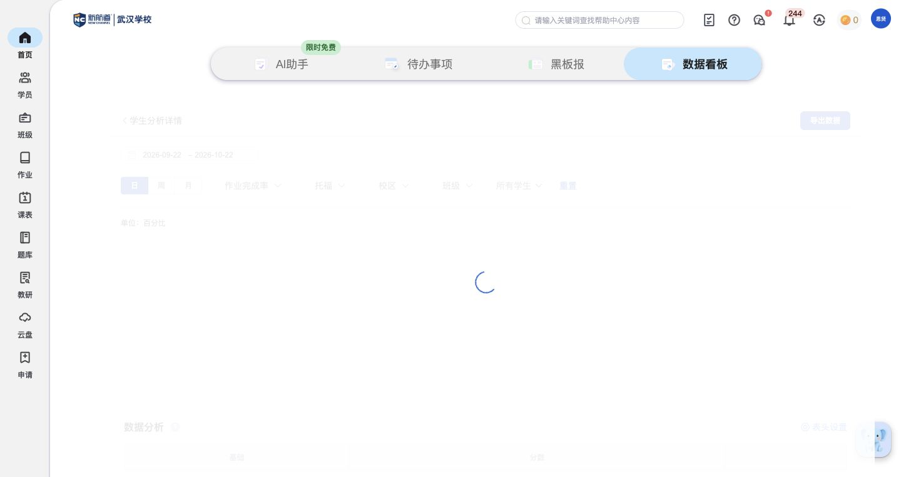
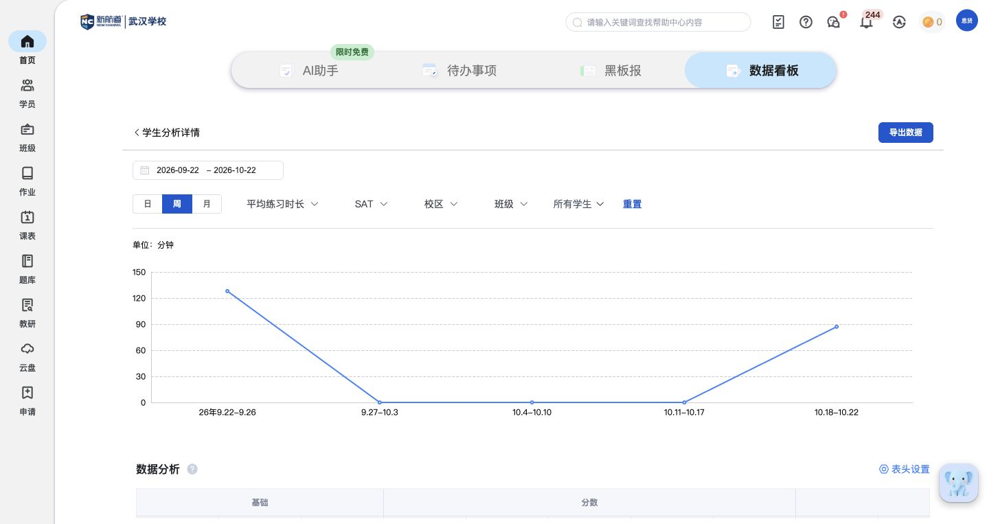
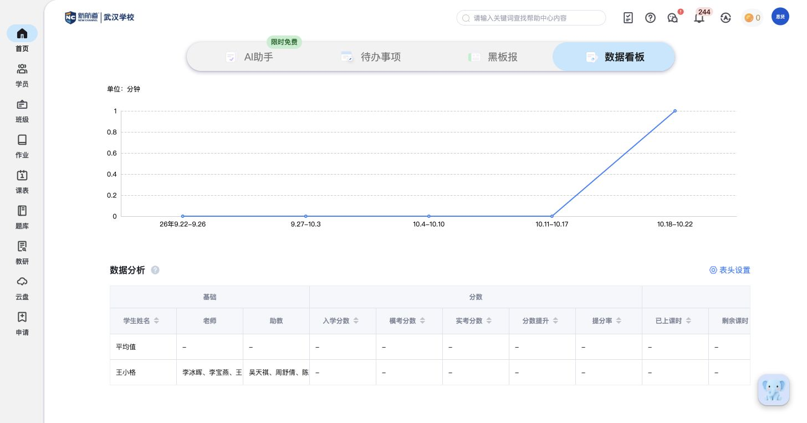
实际操作：展开作业完成率指标→选择平均练习时长。
页面反馈：菜单有作业完成率、平均练习时长、作业正确率；切换后单位从百分比改为分钟，并展示时长折线。
边界与未验证：没有从帮助文档补公式；作业正确率仅看到选项，未单独跑结果。
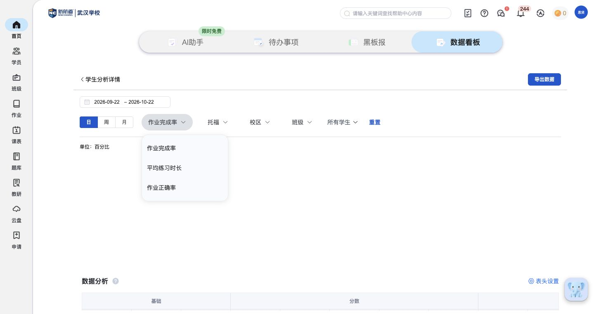
实际操作：日粒度→点击周→等待数据加载完成。
页面反馈：周选中后图表按周区间显示，例如9.22–9.26、9.27–10.3、10.18–10.22，单位仍为分钟。
边界与未验证：月粒度入口可见，但未单独核对月汇总结果。
实际操作：展开托福菜单→选择SAT。
页面反馈：菜单包含托福、雅思、SAT、小托福、ACT、PTE、AP、A-Level、GRE；切换后筛选显示SAT。
边界与未验证：其他考试类型仅验证菜单存在，没有逐一发起统计。
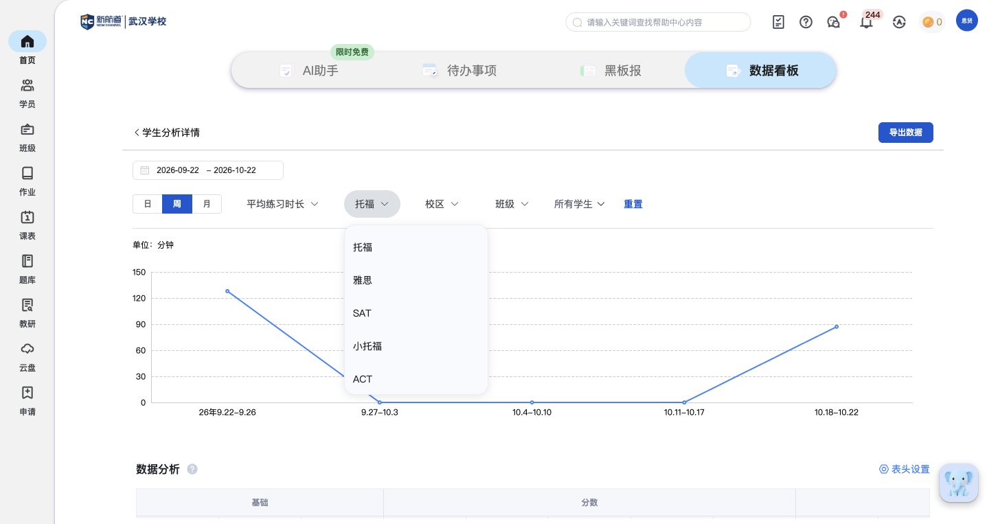
实际操作：展开校区并等待列表返回。
页面反馈：选择器有关键词搜索、全选和校区复选项；实际含总校、锦秋A-Level汉口/武昌/汉街中心、雅思北美精英光谷中心、雅思精英中南/汉口中心、北美中南中心。
边界与未验证：初次只见全选是加载中状态，后续截图已显示完整选项；不保留“校区为空”的错误结论。未应用校区验证数据范围。
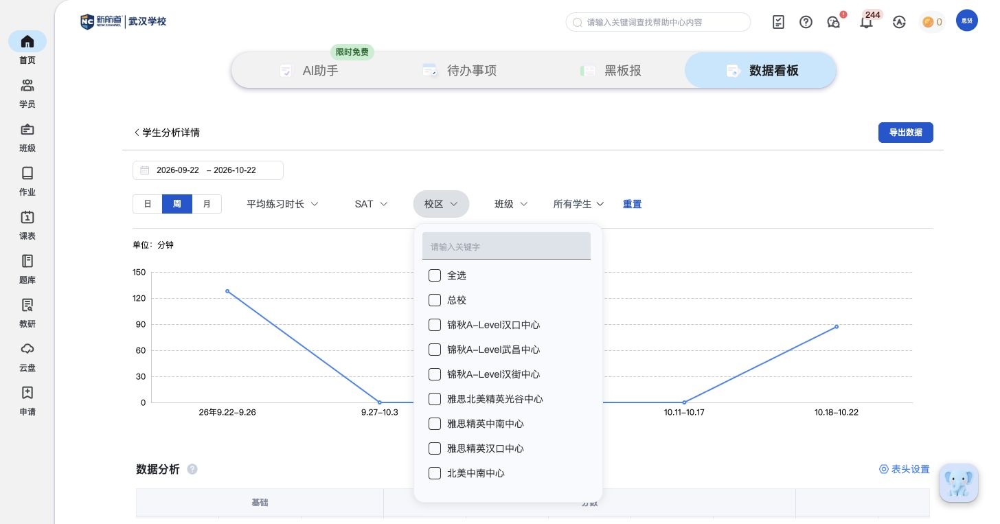
实际操作：打开班级选择器→勾选测试班002→等待刷新。
页面反馈：班级选择器支持搜索和多选；应用后显示班级(1)，表格只保留平均值和王小格数据行，折线更新。
边界与未验证：仅以一个测试班验证，不推导其他班级关系或权限规则。
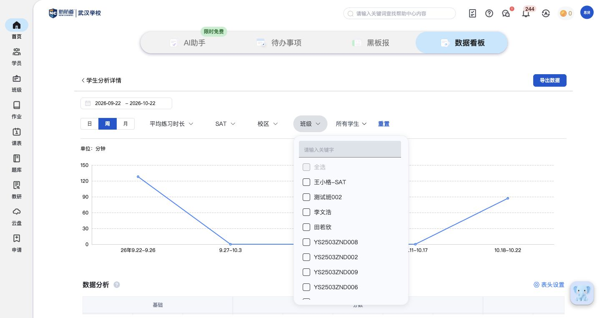
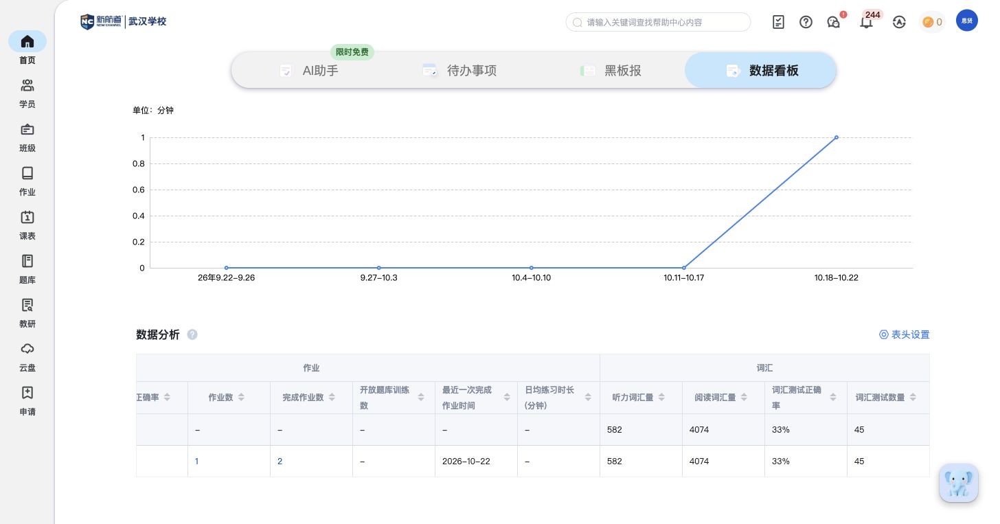
实际操作：点击所有学生，间隔后再次复查。
页面反馈：选择器提供关键词和复选列表容器，复查仍显示暂无数据；用户确认当前账号此处暂无数据。
边界与未验证：仅验证入口和空状态，不能实测选择学生后的过滤结果。
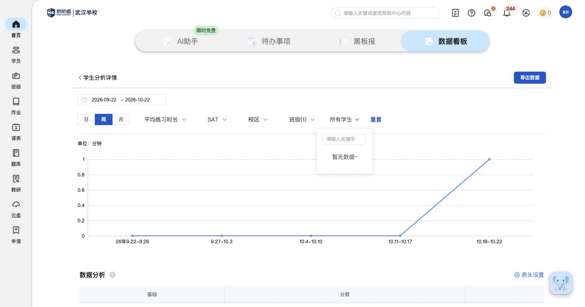
实际操作：滚动到数据分析表左侧。
页面反馈：基础：学生姓名、老师、助教。分数：入学分数、模考分数、实考分数、分数提升、提分率。课程：已上课时、剩余课时、反馈次数、回访次数。表内有平均值与学生行，部分列有排序箭头。
边界与未验证：字段显示不等同于来源或计算规则已确认；未逐列排序及下钻。
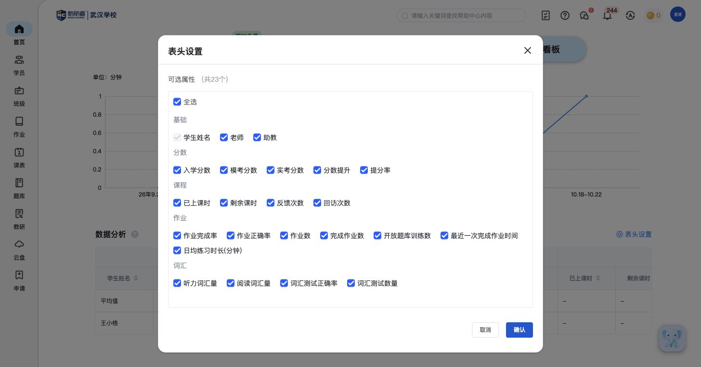
实际操作：将数据表横向滚动到右侧。
页面反馈：作业：作业完成率、作业正确率、作业数、完成作业数、开放题库训练数、最近一次完成作业时间、日均练习时长(分钟)。词汇：听力词汇量、阅读词汇量、词汇测试正确率、词汇测试数量。示例行作业数1、完成数2，按原值记录。
边界与未验证：未对“1与2”的统计对象、重复次数等作推断；这应在口径核验时解释。
实际操作：点击表头设置→查看全部分组→取消。
页面反馈：可选属性共23个，按基础、分数、课程、作业、词汇分组，带全选、确认、取消。
边界与未验证：没有提交修改，尚未验证配置持久化或导出是否遵循所选表头。
实际操作：在SAT、周、测试班002条件下点击导出数据。
页面反馈：点击后页面未新增提示；用户明确确认导出后有文件下载。
边界与未验证：本轮未读下载文件内容，没有验证文件列、格式、筛选一致性与编码。
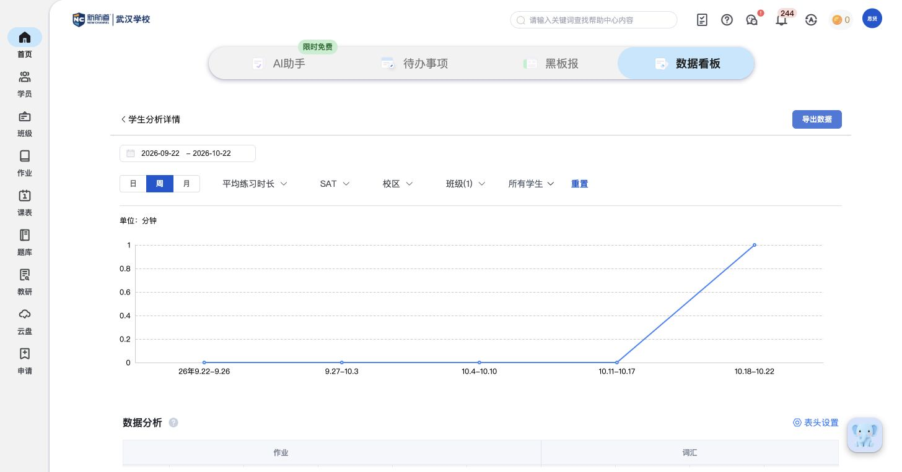
实际操作：返回总览→点击老师分析查看详情。
页面反馈：详情含日期、日/周/月、托福、平均提分率、所有老师、重置、导出数据和数据分析表；默认日期2026-09-22至10-22。
边界与未验证：当前账号返回空表，实际老师数据行与下钻暂未验证。
实际操作：展开平均提分率→选择作业批改率。
页面反馈：菜单实际是平均提分率、作业查阅率、作业批改率；切换后筛选文字变为作业批改率，单位百分比。
边界与未验证：详情指标与总览“布置作业数”不同，应分别记录。没有用帮助文档补计算公式。
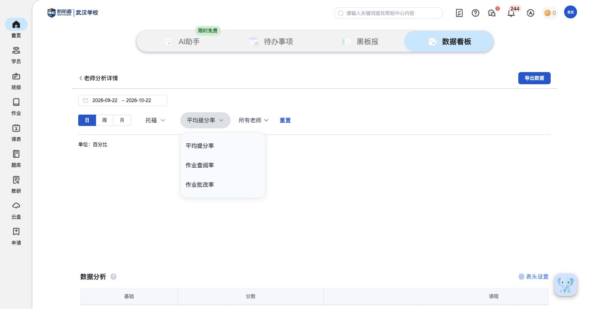
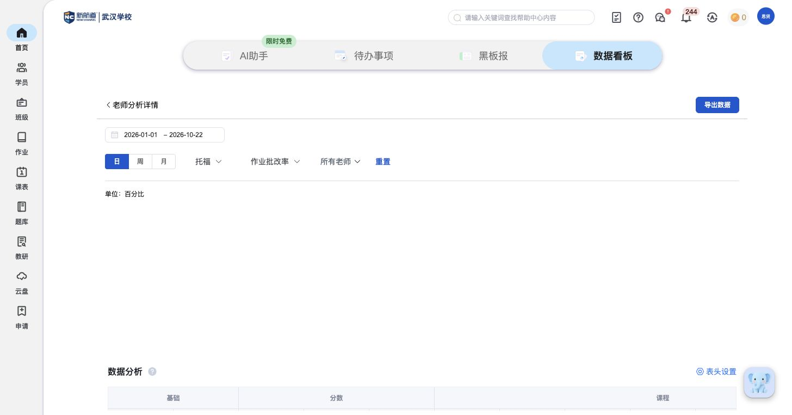
实际操作：点击所有老师，等待并查看，扩大日期复查。
页面反馈：选择器有关键词输入和复选容器，当前显示暂无数据，明细表也未返回老师行；用户确认当前账号此处暂无数据。
边界与未验证：仅验证入口与空状态，不描述为产品不支持筛老师。
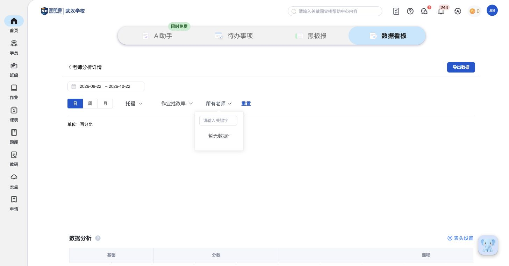
实际操作：将开始日期改为2026-01-01，结束日期保留2026-10-22→Enter。
页面反馈：日期更新为新范围，老师分析仍无明细。
边界与未验证：扩大范围没有改变本账号空数据状态；用户已确认当前账号暂无数据。
实际操作：在2026-01-01至10-22、作业批改率条件下点击重置。
页面反馈：指标回到平均提分率；日期仍为2026-01-01至10-22。
边界与未验证：本次观察不能写成“重置全部条件”；其他筛选条件是否全部恢复尚未验证。
实际操作：点击表头设置→查看分组→取消。
页面反馈：基础：老师姓名、角色。分数：提分率、实考平均分、模考平均分。课程：在授学生数、累计学生数、授课课时数、累计课时数、反馈数、未反馈数、反馈效率。作业：作业完成率、布置作业数、平均班级作业数、查阅作业数、批改作业数、查阅率、查阅效率、批改效率、课后未布置作业班级数、未布置作业班级数、最近一次布置作业、题目讲解数。
边界与未验证：共24属性；确认、取消、全选入口可见。未提交配置，没有把字段名转换成已核验的业务公式。
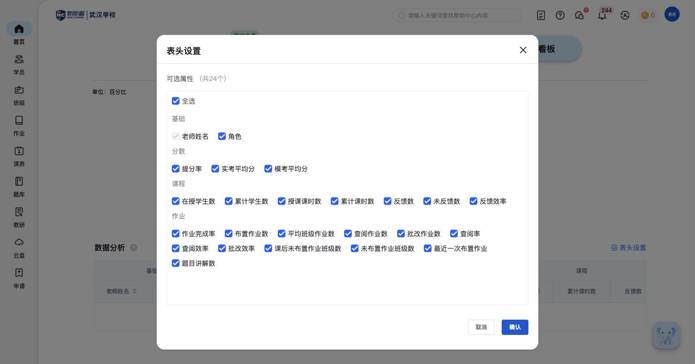
学生选择器和老师选择器经复查并由用户确认，当前账号暂无数据；老师明细和提分分析的有数据样例未覆盖。
导出下载已获用户确认成功；文件内容和筛选/表头一致性尚未核验。
待办日期过滤、排序方向、多班筛选；黑板报标题时间过滤、媒体上传、标签类别、置顶重要效果；明细表排序、数字下钻及表头提交，均未写成已跑通。
AI汇总数字、时间边界、班级口径与待办条数的关系仍需数据核对。六个推荐问题尚未全部发送验证。
首页剩余样例可在用户协助后补充；下一一级页签从“学员”开始，仍按实际操作逐功能拍图，不以旧帮助清单代替。